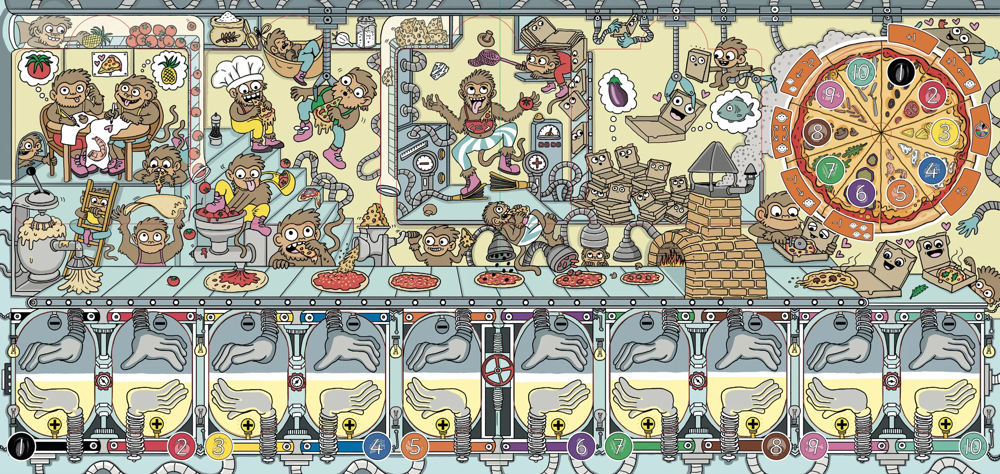

Pizzatehtaassa on 24 luukkua. Jokaisen takana on pulma kortti- tai lautapelistä — ja neljän takana kaksi. Pulmat helpottuvat joulua kohti… eivät tietenkään: ne vaikeutuvat.

Vieritä lautaa sivusuunnassa nähdäksesi koko tehtaan.